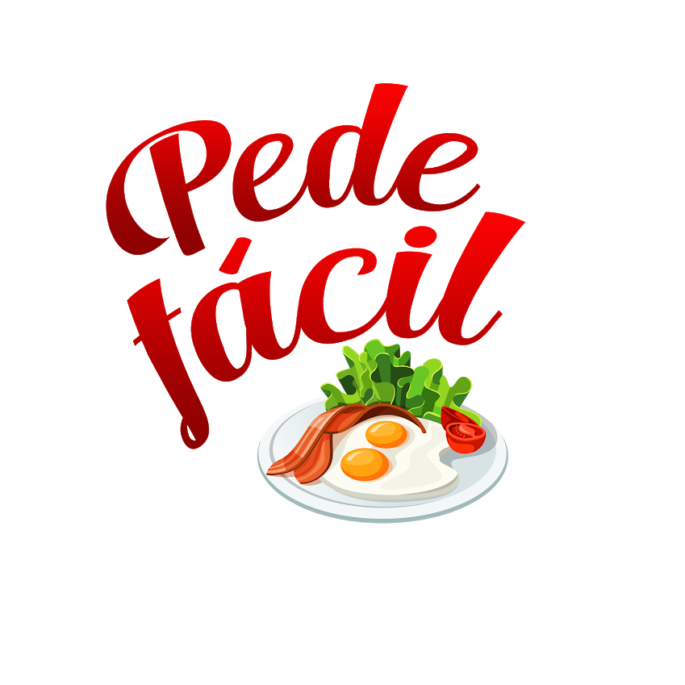

<ion-content>
    <!-- div full da splash screen -->
    <div style="height: 100%;width:100%;position: absolute;left: 0px;top: 0px;z-index: 1000;background-color: #fff">
        <!-- paragrafo com alinhamento no centro -->
        <p style="text-align: center;margin-top:30%">
        <!-- logotipo centralizado -->
        <br><br>
        <!-- spinner -->
        <ion-spinner name="crescent" style="color: #f80202;width:50px;height:50px;"></ion-spinner>
        </p>
    </div>
    <!-- fim div splash screen -->
</ion-content>